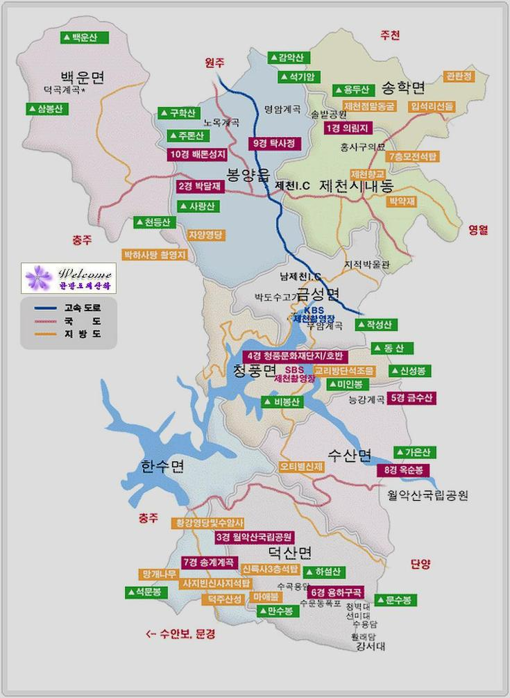
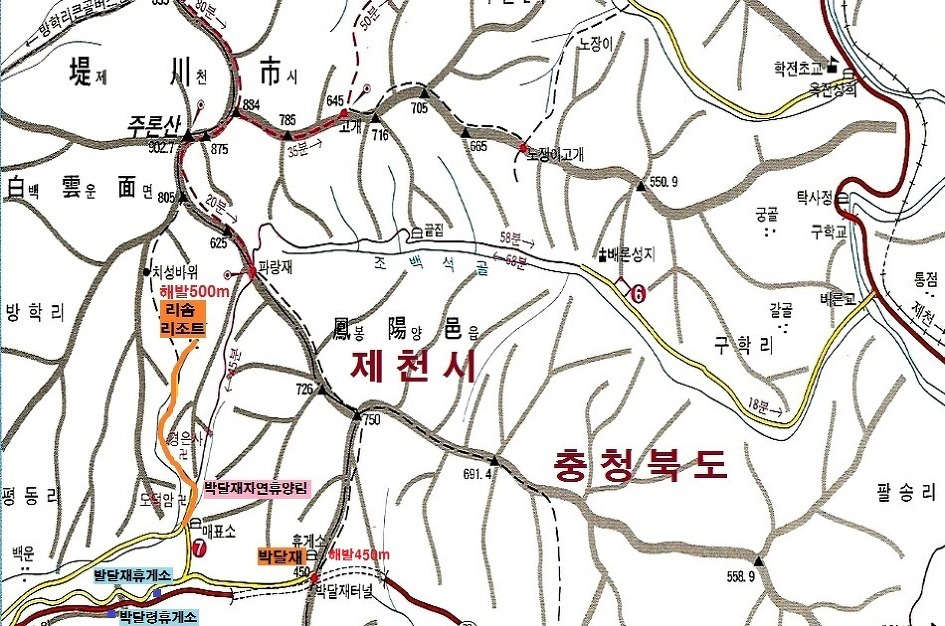
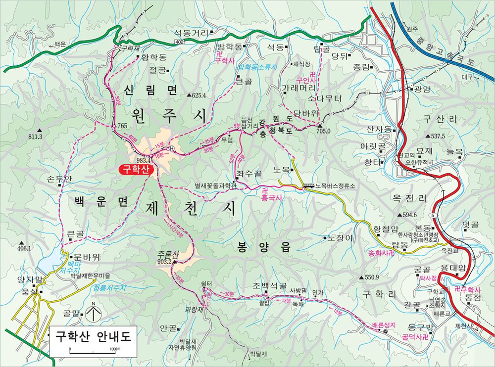
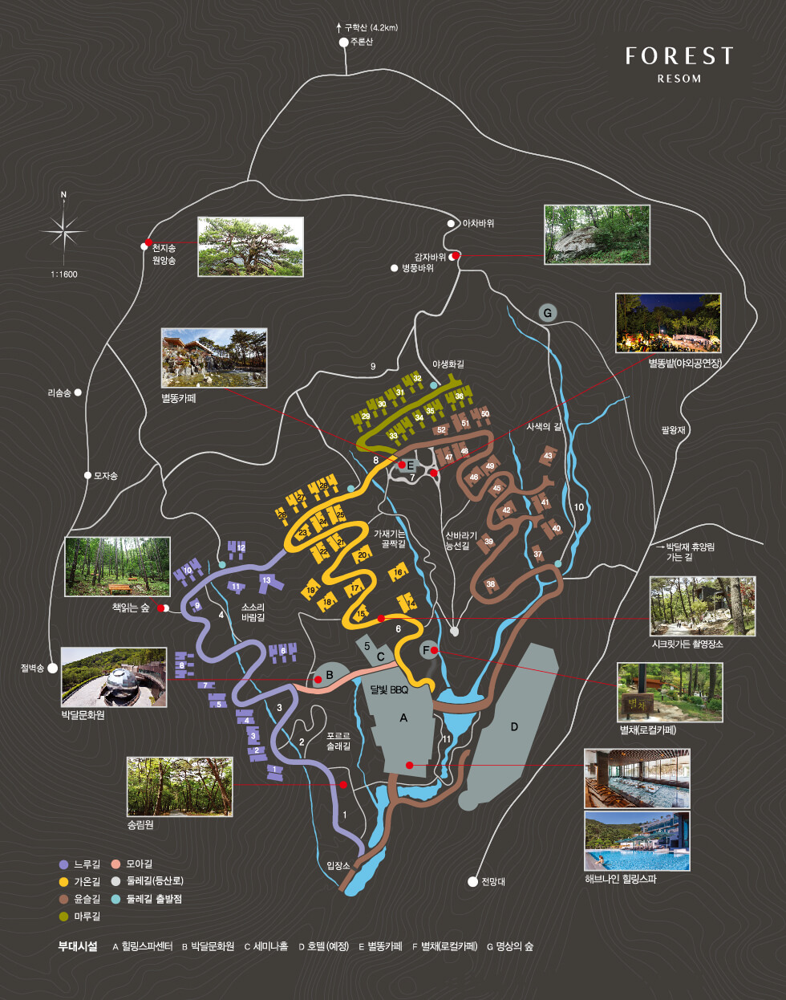

제천, 한의학의 도시? 의림지의 도시

2020년
02월 23일
제천, 배론성지, 주론산, 구학산
02월 24일
스파
02월 25일
ㅁㄴㅇㄻㄴㅇㄹ
느낀 점, 배운 것
힐링의 도시
배론성지
지형이 배의 아랫 부분을 닮았다고 해서 붙여진 이름. 한문으로 주론이라고도 함
의림지
의림지 역사 박물관: 상설전시해설 매주 화~금일요일 1일 2회 (10시, 15시)
예약및 문의 : (043)641-6569 ※ 주말 : 해설요청 현장접수
주론산, 박달재  구학산  리솜리조트 
최초 작성: 2020년 02월 21일
최종 수정: 2020년 02월 21일